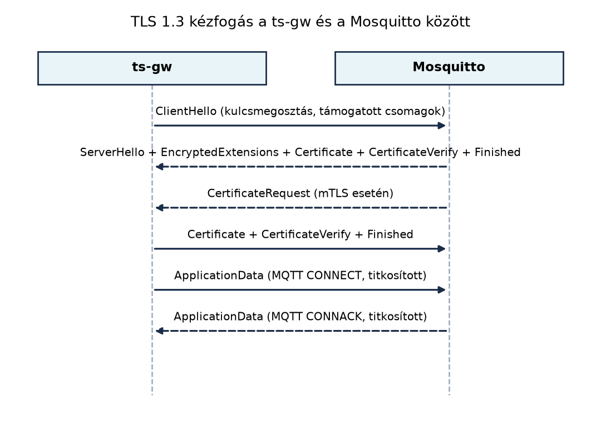

A TerraSense jelenleg nyílt, hitelesítés nélküli MQTT-kapcsolatot
használ: a ts-node, a ts-gw és a
ts-backend az MQTT a gyakorlatban
alfejezetben felépített módon a broker 1883-as portján, felhasználónév
és titkosítás nélkül kommunikál. Ez egy valós telepítésen két azonnali
problémát jelent:
Ebben az alfejezetben a TerraSense MQTT-láncát kölcsönös
TLS-hitelesítéssel (mutual TLS, mTLS) biztosítjuk. A ts-gw
és a ts-backend tanúsítvány alapján azonosítja magát, a
Mosquitto pedig tanúsítvány alapján ad jogosultságot a topicokhoz. A cél
nem csupán a titkosítás, hanem az eszközidentitás
kialakítása, amelyet a későbbi provisioning és
onboarding, valamint a záróprojekt
közvetlenül felhasznál.
Definíció. A Transport Layer Security (TLS) egy olyan kriptográfiai protokoll, amely megbízható átviteli réteg (általában TCP) fölött biztosít titkosságot, integritást és hitelesítést. A TLS 1.3-at az RFC 8446 definiálja. A kölcsönös TLS (mutual TLS, mTLS) a TLS olyan változata, amelyben nemcsak a szerver, hanem a kliens is tanúsítvánnyal igazolja magát; a kliens oldali tanúsítványt a szerver ugyanazzal a láncvalidálással ellenőrzi, mint a szerver tanúsítványát a kliens.
Definíció. A tanúsítvány-ellenőrzés során a fogadó fél a bemutatott X.509-tanúsítványt a következők szerint validálja: a tanúsítvány aláírása láncolatban visszavezethető egy megbízható gyökértanúsítványhoz (CA), a tanúsítvány érvényességi ideje aktuális, a tanúsítványban szereplő név megegyezik a kapcsolódási céllal (hostname vagy identitás), és a tanúsítványt nem vonták vissza. Ha bármelyik ellenőrzés sikertelen, a kézfogás megszakad.
A TLS 1.3 kézfogás rövidebb, mint a korábbi 1.2-es változaté, mert a
kliens az első üzenetben elküldi a kulcsmegosztási paramétereit, és a
szerver egyetlen lépésben válaszol a saját kulcsmegosztásával és
tanúsítványláncával. Üzenetsorrend-diagramon ez a következőképpen néz ki
a ts-gw és a Mosquitto között:

A kézfogás során a szerver a CertificateRequest
üzenettel kéri a kliens tanúsítványát. A ts-gw a saját
tanúsítványát és a hozzá tartozó privát kulcs aláírását küldi el a
CertificateVerify üzenetben, ezzel bizonyítja, hogy a
privát kulcs birtokában van. A Finished üzenetek után
minden adat, beleértve az MQTT CONNECT és
PUBLISH csomagokat is, titkosított rekordokban halad.
A mTLS nem csupán hitelesítésre alkalmas: a Mosquitto a bemutatott
kliens tanúsítvány Common Name (CN) mezőjét vagy a Subject
Alternative Name (SAN) mezőjét felhasználhatja a topic-szintű
jogosultságok (ACL) eldöntésére. A TerraSense esetében a
%u helyettesítő a Mosquitto ACL-fájlban a tanúsítvány
CN-jét jelenti, amennyiben a use_identity_as_username true
beállítást használjuk. Így például a ts-gw nevű kliens
tanúsítvány csak a terrasense/gh1/n001/telemetry topicra
publikálhat, a terrasense/gh1/n001/cmd topicra viszont nem
írhat; a ts-backend számára az utóbbi engedélyezett.
A TLS feltételezi a megbízható TCP-átvitelt. Azokon a korlátos
eszközökön, amelyek UDP-alapú CoAP-ot használnak, a Datagram TLS
(DTLS) biztosít hasonló védelmet. A DTLS a TLS kézfogást
datagram-alapú átvitelre adaptálja: újraküldési időzítőkkel,
sorrendszámokkal és datagram-újraösszeállítással kezeli a csomagvesztést
és a duplikációt. A DTLS 1.3 az RFC 9147-ben, a DTLS 1.2 az RFC 6347-ben
van meghatározva. A ts-node opcionális CoAP-alapú
konfigurációjában DTLS-t használhatnánk, de a jelen labor az MQTT
mTLS-re összpontosít, mert a TerraSense elsődleges kommunikációs lánca
MQTT-alapú.
Erőforrásigény. A TLS 1.3 kézfogás jellemzően néhány
kilobájtnyi adatforgalmat jelent, és a modern mikrokontrollereken a
kriptográfiai műveletek hardveres gyorsítással vagy szoftveres
megvalósítással elvégezhetők. A native_sim környezetben nem
mérünk valós fogyasztást; a tényleges eszközön a TLS-kézfogás
energiaköltsége a kézfogások gyakoriságának csökkentésével (hosszú
munkamenet, session resumption) optimalizálható.
| Szempont | Titkosítatlan MQTT | Szerveroldali TLS | mTLS |
|---|---|---|---|
| Kliens hitelesítése | nincs | felhasználónév/jelszó vagy nincs | tanúsítvány, erős identitás |
| Topic-szintű ACL alapja | IP vagy felhasználónév | felhasználónév | tanúsítvány CN/SAN |
| Kulcskezelés bonyolultsága | nincs | szerver oldali | minden eszköznek saját kulcs és tanúsítvány |
| Javasolt alkalmazás | fejlesztői teszt | kísérleti rendszer, belső hálózat | termelési TerraSense |
A TerraSense termelési célja egyértelműen az mTLS. A nyílt portot a
laborban lezárjuk, hogy véletlenül se maradjon hitelesítetlen belépési
pont. A ts-node eszközökön opcionálisan szintén bevezethető
az mTLS, de a nagyon korlátos hardveren a DTLS vagy a szimmetrikus
kulcsos hitelesítés megfontolható; ezt a provisioning témakörében vizsgáljuk tovább.
Munkakönyvtár:
~/iot-labor/i057 && mkdir -p ~/iot-labor/i057 && cd ~/iot-labor/i057
A labor három fő lépésből áll: tanúsítványok létrehozása, a Mosquitto
konfigurációjának átállítása mTLS-re, majd a ts-gw (Paho C)
és a ts-backend (Spring Boot) kliensoldali beállítása.
Az alábbi openssl parancsok csak a labor céljára
szolgálnak, nem éles környezetre. Létrehozunk egy labor-CA-t, majd egy
szerver tanúsítványt a brokerhez és két kliens tanúsítványt a
ts-gw és a ts-backend számára.
mkdir -p ~/iot-labor/stack/certs && cd ~/iot-labor/stack/certs
# Labor-CA
openssl req -x509 -newkey rsa:2048 -nodes -days 3650 \
-keyout lab-ca.key -out lab-ca.crt \
-subj "/CN=lab-ca"
# Szerver tanúsítvány
openssl req -newkey rsa:2048 -nodes \
-keyout mosquitto.key -out mosquitto.csr \
-subj "/CN=localhost"
printf "subjectAltName=DNS:localhost,IP:127.0.0.1\n" > mosquitto.ext
openssl x509 -req -in mosquitto.csr -CA lab-ca.crt -CAkey lab-ca.key \
-CAcreateserial -days 3650 -out mosquitto.crt -extfile mosquitto.ext
# Kliens tanúsítvány: ts-gw
openssl req -newkey rsa:2048 -nodes \
-keyout ts-gw.key -out ts-gw.csr \
-subj "/CN=ts-gw"
openssl x509 -req -in ts-gw.csr -CA lab-ca.crt -CAkey lab-ca.key \
-CAcreateserial -days 3650 -out ts-gw.crt
# Kliens tanúsítvány: ts-backend
openssl req -newkey rsa:2048 -nodes \
-keyout ts-backend.key -out ts-backend.csr \
-subj "/CN=ts-backend"
openssl x509 -req -in ts-backend.csr -CA lab-ca.crt -CAkey lab-ca.key \
-CAcreateserial -days 3650 -out ts-backend.crtA fájlokat a ~/iot-labor/stack/certs/ könyvtárban
helyezzük el, hogy a közös compose.yaml szolgáltatásai
egyszerűen csatolhassák őket.
A korábbi stack/mosquitto/mosquitto.conf fájlt
módosítjuk. A titkosítatlan listener 1883 sort eltávolítjuk
vagy kommenteljük, és beállítjuk a TLS-listener-t. Az ACL-fájlt külön
hozzuk létre.
Először az ACL-fájl:
# ~/iot-labor/stack/mosquitto/acl.conf
# ts-gw csak telemetriát és állapotot publikálhat
user ts-gw
topic write terrasense/gh1/n001/telemetry
topic write terrasense/gh1/n001/state
# ts-backend olvashatja a telemetriát, és parancsot adhat ki
user ts-backend
topic read terrasense/+/+/telemetry
topic read terrasense/+/+/state
topic write terrasense/+/+/cmd
topic read terrasense/+/+/cmd/resultA Mosquitto konfigurációja a
stack/mosquitto/mosquitto.conf fájlban:
# ~/iot-labor/stack/mosquitto/mosquitto.conf
per_listener_settings true
listener 8883
cafile /mosquitto/certs/lab-ca.crt
certfile /mosquitto/certs/mosquitto.crt
keyfile /mosquitto/certs/mosquitto.key
require_certificate true
use_identity_as_username true
acl_file /mosquitto/acl.confA per_listener_settings true beállítás biztosítja, hogy
az esetleges további listener-ek ne örököljék automatikusan a
TLS-beállításokat. A require_certificate true kötelezővé
teszi a kliens tanúsítványt. A
use_identity_as_username true hatására a broker a kliens
tanúsítvány CN-jét használja felhasználónévként, így az ACL-fájl
user ts-gw és user ts-backend sorai
érvényesülnek.
A stack/compose.yaml lab-broker
szolgáltatásában a következő csatolásokat kell hozzáadni vagy
módosítani:
lab-broker:
image: eclipse-mosquitto:2
ports:
- "8883:8883"
volumes:
- ./mosquitto/mosquitto.conf:/mosquitto/config/mosquitto.conf:ro
- ./mosquitto/acl.conf:/mosquitto/acl.conf:ro
- ./certs:/mosquitto/certs:roA 1883-as port nyilvánossá tételét töröljük vagy ne hozzuk létre. A konténer újraindítása után a broker csak a TLS-listener-en hallgat.
A A ts-gw szolgáltatás C++-ban laborban
létrehozott MqttPublisher Paho MQTT C klienst használ. A
forráskódban a kapcsolati opciókat ki kell egészíteni
SSL-beállításokkal. A MQTTClient_connectOptions
struktúrához MQTTClient_SSLOptions rendelhető:
// ~/iot-labor/i036/ts-gw/src/mqtt_publisher.cpp (részlet)
MQTTClient_connectOptions conn_opts = MQTTClient_connectOptions_initializer;
MQTTClient_SSLOptions ssl_opts = MQTTClient_SSLOptions_initializer;
ssl_opts.trustStore = "/home/user/iot-labor/stack/certs/lab-ca.crt";
ssl_opts.keyStore = "/home/user/iot-labor/stack/certs/ts-gw.crt";
ssl_opts.privateKey = "/home/user/iot-labor/stack/certs/ts-gw.key";
ssl_opts.enableServerCertAuth = 1;
conn_opts.ssl = &ssl_opts;
conn_opts.keepAliveInterval = 20;
conn_opts.cleansession = 1;A MQTTClient_connect() híváskor a kliens a
trustStore-ban megadott CA-val ellenőrzi a broker
tanúsítványát, és bemutatja a ts-gw tanúsítványát. A
laborban a ts-gw buildjét a korábbi CMake-projektbe
integráljuk; az SSL-hez a Paho könyvtárat SSL-támogatással kell
linkelni, amely az Ubuntu-csomagban általában alapértelmezett.
A ts-backend MQTT-ingest komponense a A ts-backend váza alfejezetben létrehozott Spring
Boot alkalmazás része. Az application.yml MQTT-szekcióját a
következőképpen egészítjük ki (a pontos property-nevek a használt Spring
Integration MQTT-verziótól függhetnek):
mqtt:
broker-url: ssl://localhost:8883
client-id: ts-backend
ssl:
trust-store: file:/home/user/iot-labor/stack/certs/lab-ca.crt
key-store: file:/home/user/iot-labor/stack/certs/ts-backend.crt
key-store-password: ""
key-password: ""A titkosítatlan tcp:// URL-t tehát ssl://
URL-re cseréljük. A tanúsítványfájlokat a laborban generált, jelszó
nélküli PEM-fájlokból töltjük be; éles környezetben a kulcsokat mindig
jelszóval védett kulcstárolóban vagy hardveres biztonsági modulban kell
tartani.
A broker újraindítása után ellenőrizzük, hogy a titkosítatlan port tényleg nem elérhető:
nc -vz localhost 1883A parancsnak kapcsolódási hibát kell jeleznie. A TLS-port
ellenőrzésére openssl s_client-t használhatunk:
openssl s_client -connect localhost:8883 -CAfile ~/iot-labor/stack/certs/lab-ca.crt \
-cert ~/iot-labor/stack/certs/ts-gw.crt -key ~/iot-labor/stack/certs/ts-gw.keyHa a kézfogás sikeres, az openssl kiírja a
tanúsítványláncot, és a kapcsolat létrejön. Ezután a ts-gw
és a ts-backend újraindításával a teljes TerraSense-lánc
titkosítottan működik. A Mosquitto naplójában ellenőrizhetjük a sikeres
TLS-kapcsolatokat és az ACL-döntéseket:
New connection from 127.0.0.1:55912 on port 8883.
New client connected from 127.0.0.1:55912 as ts-gw (p2, c1, k20).A labor sikerességének ellenőrzése három szinten történik:
nc -vz localhost 1883 parancs sikertelen, a 8883-as porton
viszont openssl s_client kézfogás létrejön.ts-gw tanúsítvánnyal
rendelkező klienssel próbáljunk meg terrasense/gh1/n001/cmd
topicra publikálni. A Mosquittónak vissza kell utasítania a
PUBLISH csomagot, és a naplóban Denied PUBLISH
bejegyzés jelenik meg.ts-gw által publikált
telemetria megjelenik a terrasense/gh1/n001/telemetry
topicra feliratkozott, ts-backend tanúsítvánnyal rendelkező
előfizetőnél.Tipikus hibák és javításuk:
| Tünet | Ok | Javítás |
|---|---|---|
ts-gw nem tud kapcsolódni,
SSL error: certificate verify failed |
A trustStore nem tartalmazza a labor-CA-t, vagy a
broker tanúsítványát nem a CA írta alá |
Ellenőrizd a cafile elérési útját és a
lab-ca.crt másolatát a kliens oldalon |
A Mosquitto elutasítja a klienst bad certificate
üzenettel |
A kliens tanúsítvány nem a cafile-ban megadott CA-tól
származik |
Győződj meg róla, hogy a kliens tanúsítványt a
lab-ca.crt-hez tartozó lab-ca.key-vel írtad
alá |
A kapcsolat létrejön, de a PUBLISH
not authorised hibát ad |
Az ACL-fájlban a CN nem egyezik a user sorral, vagy a
use_identity_as_username hiányzik |
Ellenőrizd a tanúsítvány CN-jét
(openssl x509 -in ts-gw.crt -noout -subject) és a Mosquitto
konfigurációját |
A Spring Boot kliens nem indul el ssl:// URL-lel |
A Paho Java kliens nem találja a kulcstárolót, vagy a property-nevek nem illeszkednek | Teszteld a kapcsolatot egy minimális Java programmal, és ellenőrizd a Spring Boot verziójának dokumentációját |
use_identity_as_username-t kihagyni. Enélkül a
Mosquitto nem tudja, hogy a CN-t kell az ACL-kiértékeléshez használni,
és vagy anonim felhasználóként kezeli a klienst, vagy az ACL-fájl
user sorait figyelmen kívül hagyja.native_sim
környezet és a labor célja a működés demonstrálása. Éles rendszerben a
privát kulcsot soha nem tároljuk jelszó nélkül a fájlrendszerben; a kriptográfiai alapok és a kulcstárolás alfejezetben tárgyalt hardveres
védelmet kell alkalmazni.ts-gw TLS-t
használ.Magyarázd el, miért nem elegendő a szerveroldali TLS a TerraSense-ben, és mit ad hozzá az mTLS a fenyegetésmodell szempontjából!
Tervezd meg az ACL-szabályokat egy olyan bővítéshez, ahol egy második
ts-gw (CN=ts-gw2) is csatlakozik, de csak a
gh2 site telemetriáját olvashatja, és nem adhat ki
parancsot. Írd le a user és topic sorokat!
Módosítsd a ~/iot-labor/i036/ts-gw forráskódját a fenti
Paho SSL-beállításokkal, és buildeld újra a projektet. A
ts-gw a ssl://localhost:8883 URL-lel
csatlakozzon a brokerhez. Ellenőrizd, hogy a telemetria továbbra is
megérkezik a terrasense/gh1/n001/telemetry topicra.
A Mosquitto hirtelen elkezdi elutasítani a ts-backend
kapcsolódását unknown ca hibával. Sorold fel a lehetséges
okokat, és add meg a diagnosztikai parancsokat, amelyekkel meghatározod
a hibát!
A szerveroldali TLS csak a broker identitását hitelesíti a kliens felé, és titkosítja az adatfolyamot. A szerver nem tudja, hogy ki a kliens; így bárki, aki eléri a hálózati portot, csatlakozhat, és hamis adatokat publikálhat vagy parancsokat küldhet. Az mTLS a kliens tanúsítványát is ellenőrzi, így a broker a tanúsítvány CN-jéből megbízhatóan azonosítja a klienst, és topic-szintű ACL-t alkalmazhat. Ez a TerraSense fenyegetésmodelljében a megszemélyesítés (spoofing) és az illetéktelen beavatkozás elleni védelmet erősíti.
Az ACL-fájlba a következő sorok kerülnek:
user ts-gw2
topic read terrasense/gh2/+/telemetry
topic read terrasense/gh2/+/state
topic write terrasense/gh2/+/stateA ts-gw2 tehát csak read jogot kap a
gh2 site telemetriájához és állapotához, és nem kap
write jogot a cmd topicokra. A +
wildcard a site-on belüli bármely node-ot jelenti, így a szabály
skálázható marad.
A mqtt_publisher.cpp-ben a fenti SSL-opciókat kell
beállítani, majd a buildet újra lefuttatni. A CMake a Paho könyvtárral
linkel; az SSL-támogatáshoz a paho-mqtt3c könyvtár mellett
a paho-mqtt3cs SSL-változat is használható, ha a csomag
külön telepített. A ts-gw indítása után a broker naplójában
látható a sikeres TLS-kapcsolat, és a feliratkozó
ts-backend megkapja a telemetriát.
Lehetséges okok:
ts-backend által megadott trustStore nem
tartalmazza a labor-CA-t, vagy a fájl elérési útja helytelen.ts-backend kliens tanúsítványát nem a broker
cafile-ként beállított CA írta alá.cafile nem a labor-CA-t
mutatja.Diagnosztikai parancsok:
openssl verify -CAfile ~/iot-labor/stack/certs/lab-ca.crt \
~/iot-labor/stack/certs/ts-backend.crt
openssl x509 -in ~/iot-labor/stack/certs/ts-backend.crt -noout -issuer -subject -dates
openssl s_client -connect localhost:8883 -CAfile ~/iot-labor/stack/certs/lab-ca.crt \
-cert ~/iot-labor/stack/certs/ts-backend.crt -key ~/iot-labor/stack/certs/ts-backend.keyA openssl verify megmutatja, hogy a tanúsítvány érvényes
láncba tartozik-e; az openssl x509 a kiállítót és az
érvényességi időt; az openssl s_client pedig a kézfogás
sikerességét.
Ebben az alfejezetben a TerraSense MQTT-láncát mTLS-sel
biztosítottuk. Létrehoztuk a labor-CA-t, a Mosquitto szerver
tanúsítványát, valamint a ts-gw és ts-backend
kliens tanúsítványokat a ~/iot-labor/stack/certs/
könyvtárban. A Mosquitto konfigurációját átállítottuk a 8883-as
TLS-listener-re, require_certificate true és
use_identity_as_username true beállításokkal, és bevezettük
a ~/iot-labor/stack/mosquitto/acl.conf ACL-fájlt, amely a
tanúsítvány CN-je alapján topic-szintű jogosultságot ad. A
ts-gw Paho C kliensét SSL-opciókkal, a
ts-backend Spring Boot alkalmazást ssl://
URL-lel és kulcstárolókkal állítottuk be. A titkosítatlan 1883-as portot
lezártuk. A továbbvitt eredmény: a biztonságos broker-konfiguráció, a
tanúsítványfájlok és az ACL-szabályok, amelyeket az Eszközmenedzsment: provisioning, OTA, flotta és a
Záróprojekt közvetlenül felhasznál.
per_listener_settings,
use_identity_as_username, require_certificate,
acl_file direktívák pontos nevei és hatásai az aktuális
Mosquitto 2.x verzióban.MQTTClient_SSLOptions struktúra mezőinek
pontos neve és az Ubuntu-csomagban elérhető SSL-könyvtár neve.